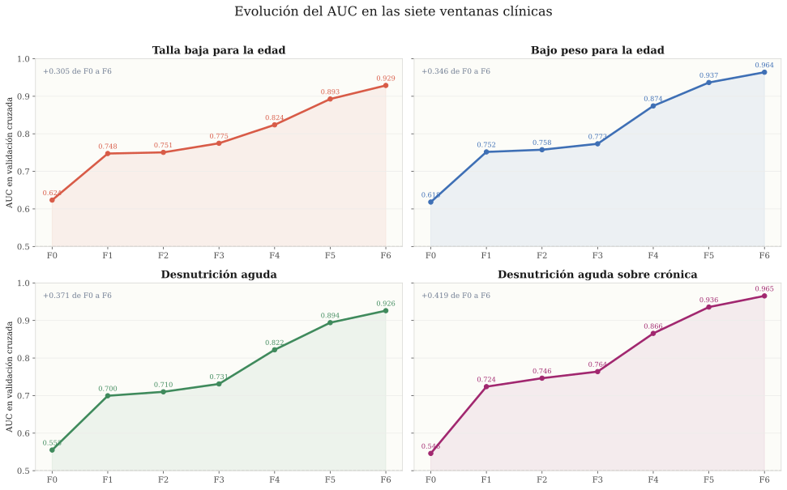
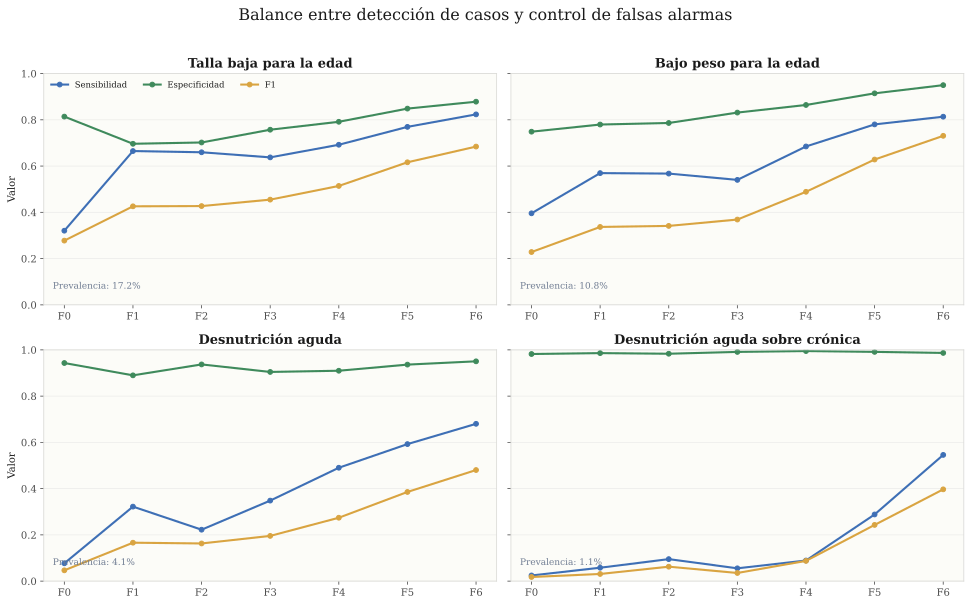
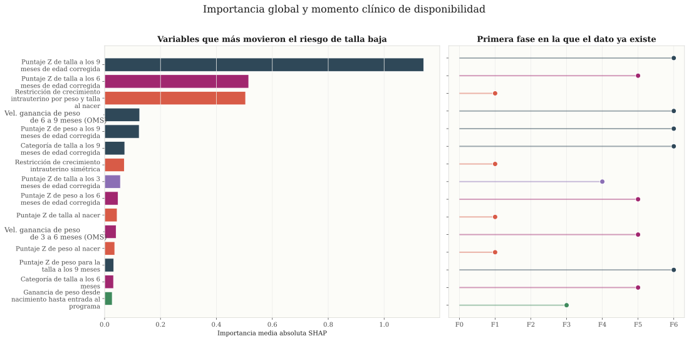
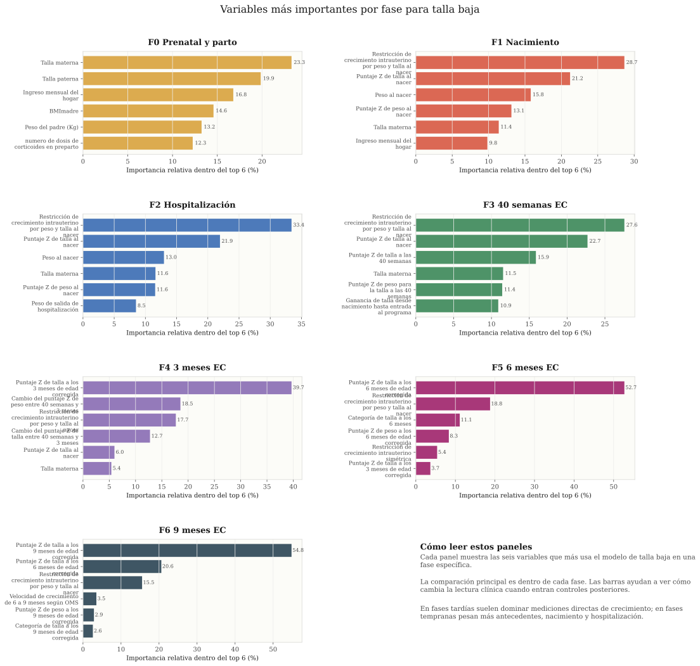
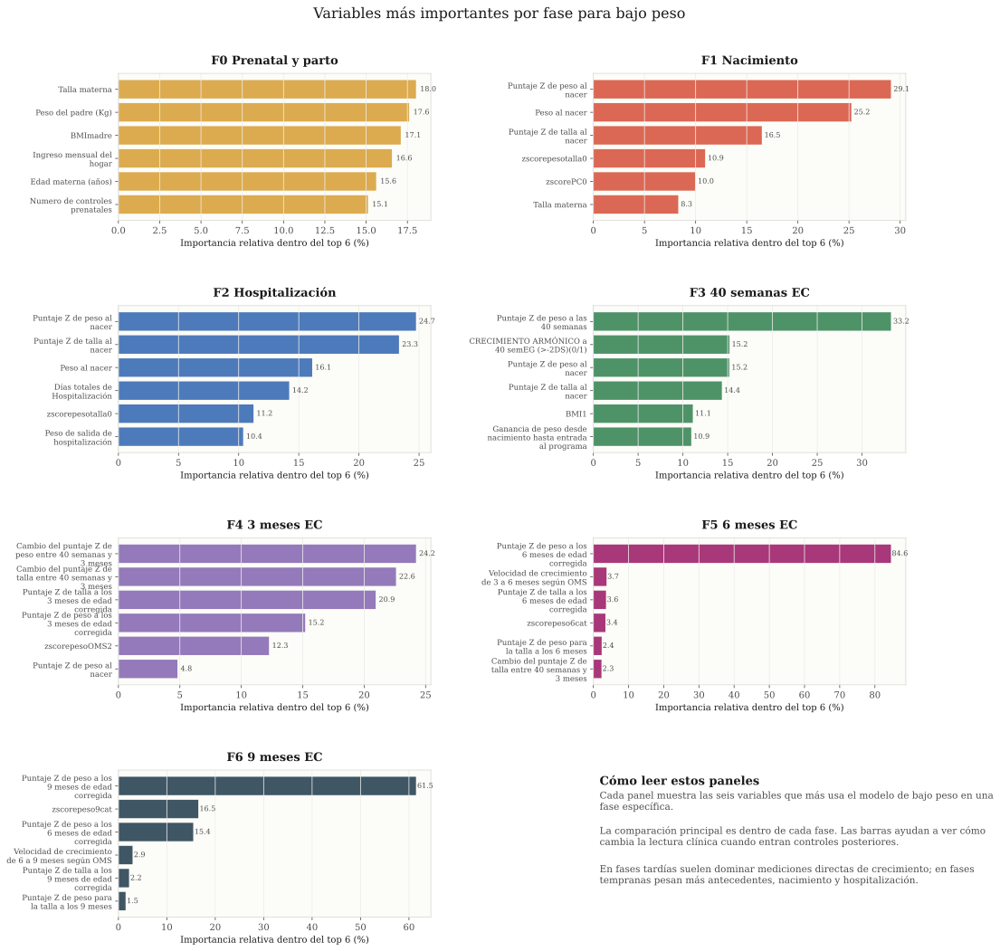
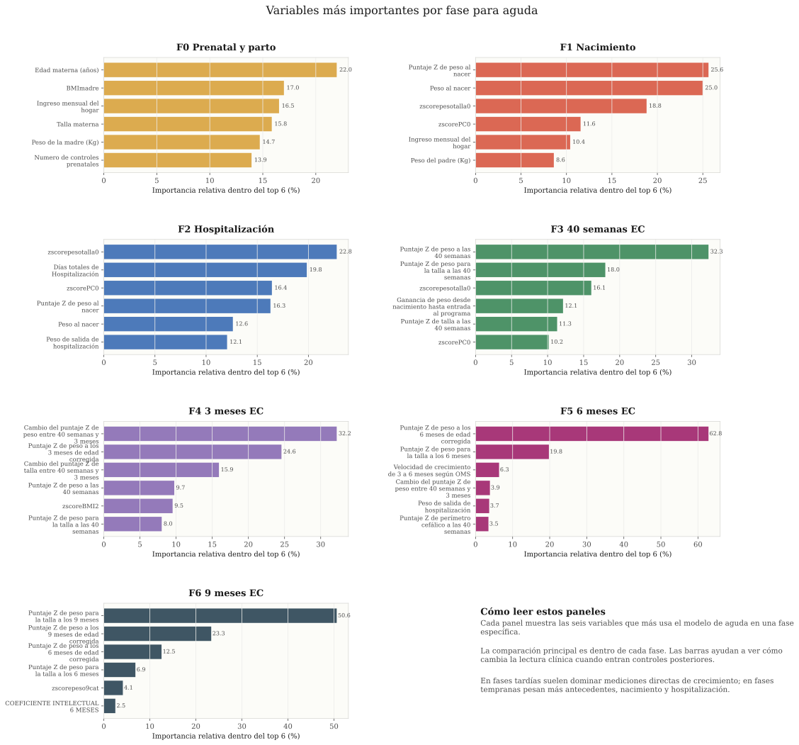
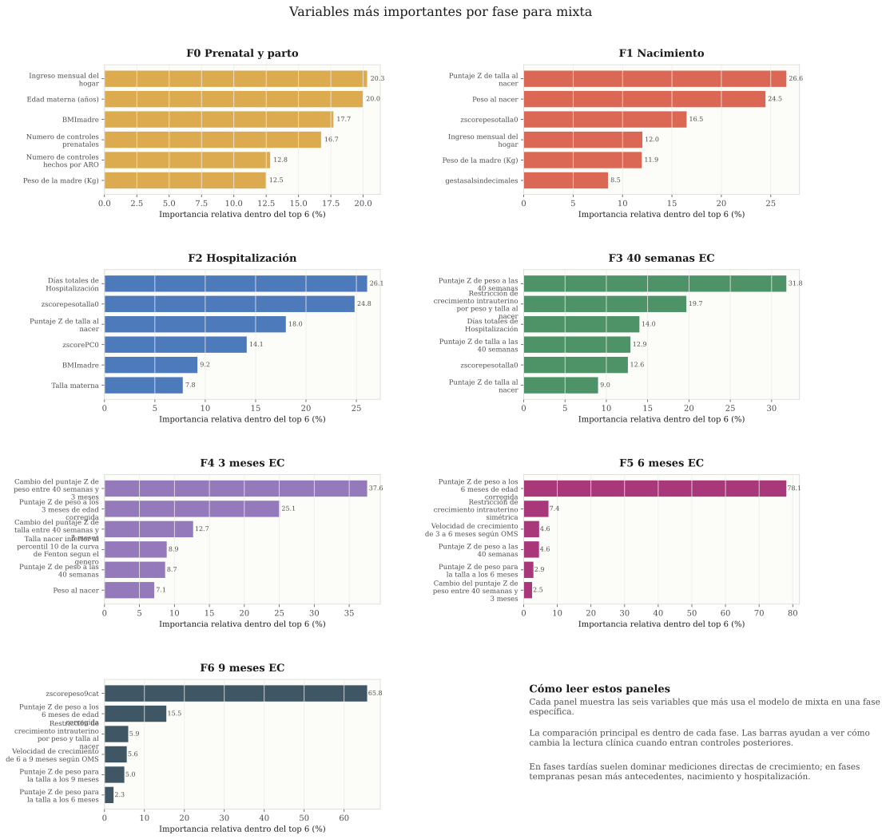
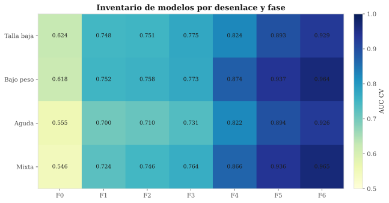

Detección temprana del riesgo nutricional a 12 meses de edad corregida
Modelos de detección temprana de riesgo para cuatro desenlaces nutricionales en prematuros
del Programa Madre Canguro Integral: talla para la edad (T/E), peso para la edad (P/E), peso para la talla (P/T)
y mixta, evaluados en siete ventanas clínicas acumulativas.
En este trabajo construimos un sistema de detección temprana que no calcula el riesgo
nutricional una sola vez, sino que lo actualiza conforme el niño avanza por sus
controles clínicos y aparece información nueva. A partir de una base de datos con
más de 70.000 registros del Programa Madre Canguro Integral, entrenamos 28 modelos
que cubren cuatro tipos de desenlace nutricional en siete momentos distintos del
seguimiento. A continuación presentamos cómo funciona el sistema, por qué tomamos
cada decisión metodológica y qué encontramos en los resultados.
Qué problema clínico estamos abordando
El Programa Madre Canguro Integral (PMCI) de la Fundación Canguro hace seguimiento
a niños que nacieron prematuros o con bajo peso. Estos niños no se entienden solo
por lo que pasó en el parto: su crecimiento depende del embarazo, de lo que ocurrió
en la hospitalización, de cómo los alimentaron al salir y de cómo evolucionaron sus
medidas en cada control posterior. La información se va acumulando con el tiempo, y
cada visita cambia un poco la lectura del caso.
Esa es justamente la idea detrás de nuestro enfoque: en lugar de hacer una sola
estimación al inicio y dejarla fija, organizamos el modelo como una cascada temporal.
Arrancamos con lo que sabemos antes del nacimiento y vamos sumando información clínica
sin borrar lo anterior. Así, la estimación de riesgo se actualiza cada vez que el equipo clínico
tiene datos nuevos.
Lo que entrega el modelo es una probabilidad de presentar un desenlace nutricional
adverso a los 12 meses de edad corregida. Esa probabilidad no es un diagnóstico
automático. Funciona más bien como una señal de alerta: ayuda a priorizar atención,
a identificar niños que conviene vigilar más de cerca y a tener una conversación
informada sobre el riesgo durante el seguimiento.
Qué datos tenemos y cómo están organizados
Todo parte de los registros clínicos del PMCI. El dataset tiene 70.062
pacientes en total, de los cuales ~31.000 tienen información
completa hasta los 12 meses de edad corregida y son los que usamos para entrenar
y evaluar los modelos. Los ~39.000 restantes se descartaron porque no llegaron al
control de 12 meses o les faltan las mediciones necesarias para definir los
desenlaces.
Cada paciente tiene hasta 200 variables que se van acumulando
conforme avanza el seguimiento. No es que tengamos 200 datos desde el inicio: la
información crece con cada visita. Para organizar esto, dividimos las variables en
siete fases clínicas que siguen el orden natural del seguimiento:
Las siete fases y qué tipo de información entra en cada una
F0 — Prenatal y parto (41 variables): lo que sabemos antes
de conocer al bebé. Incluye datos socioeconómicos de la familia (ingreso, escolaridad,
tipo de vivienda), características de la madre (peso, talla, IMC, edad), antecedentes
del embarazo (controles prenatales, complicaciones como preeclampsia, sangrado,
infección urinaria) y del parto (cesárea, corticoides, embarazo múltiple).
F1 — Nacimiento (77 variables): se suman 36 variables nuevas.
Acá entran las mediciones del recién nacido (peso, talla, perímetro cefálico),
los puntajes Apgar, la edad gestacional, la clasificación por grupo de nacimiento
(A1–A4), si hubo RCIU y si fue simétrica o asimétrica, y los primeros z-scores
calculados con tablas de Fenton.
F2 — Hospitalización (109 variables): se agregan 32 variables
sobre lo que pasó durante la internación. Días en UCI, días con ventilación mecánica
o no invasiva, oxígeno, fototerapia, transfusiones, sepsis, displasia broncopulmonar,
hemorragia intraventricular y retinopatía. También el total de días hospitalizados.
F3 — 40 semanas de edad corregida (139 variables): 30 variables
nuevas. El primer punto de comparación usando tablas OMS: z-scores de peso, talla,
perímetro cefálico e IMC a las 40 semanas corregidas. También ganancias de peso y
talla desde el nacimiento hasta este momento.
F4 — 3 meses de edad corregida (166 variables): 27 variables
nuevas. Acá aparecen los z-scores a los 3 meses, las primeras
velocidades de crecimiento (qué tan rápido creció entre 40 semanas
y 3 meses), el tipo de alimentación (leche materna exclusiva, fórmula, mixta) y
la evaluación neuromotora (Infanib). Esta fase produce el salto de desempeño más
grande porque introduce la trayectoria de crecimiento.
F5 — 6 meses de edad corregida (185 variables): 19 variables
nuevas. Z-scores a los 6 meses, velocidades de crecimiento entre 3 y 6 meses,
alimentación a los 6 meses y rehospitalizaciones.
F6 — 9 meses de edad corregida (200 variables): las últimas
15 variables. Z-scores a los 9 meses, velocidades entre 6 y 9 meses, y alimentación
a los 9 meses. Es la última lectura antes del desenlace a 12 meses.
Qué podemos ver desde estos datos
Si agrupamos las 200 variables por tipo, el dataset cubre cinco grandes dimensiones
de cada niño:
Antropometría y crecimiento (~68 variables): la columna vertebral
del dataset. Peso, talla, perímetro cefálico e IMC medidos en cada visita, convertidos
a z-scores con tablas Fenton (antes de 40 semanas) u OMS (después). Más las velocidades
de crecimiento entre visitas y las ganancias acumuladas.
Complicaciones hospitalarias (~35 variables): todo lo que pasó
durante la internación neonatal. Días en diferentes tipos de soporte respiratorio,
transfusiones, valores de laboratorio (hematocrito, bilirrubina), sepsis, displasia,
hemorragia intraventricular.
Alimentación (~17 variables): tipo de alimentación en cada control
(leche materna exclusiva, fórmula, complementaria), que cambia a lo largo del
seguimiento.
Contexto familiar y socioeconómico (~9 variables): ingreso mensual,
escolaridad de los padres, tipo de vivienda, situación laboral, nutrición familiar.
Solo se miden al ingreso, pero acompañan al modelo en todas las fases.
Embarazo, parto y condición al nacer (~40 variables): antecedentes
maternos, complicaciones del embarazo, tipo de parto, edad gestacional, clasificación
A1–A4 y RCIU.
Perfil de la población
De los ~31.000 pacientes evaluables, la mayoría son prematuros: el 75,2%
nació antes de las 37 semanas y un 12,3% antes de las 32 semanas
(muy prematuros). La edad gestacional promedio es de 34,7 semanas. El
77,2% pesó entre 1.500 y 2.499 gramos al nacer, un 13,6% pesó
menos de 1.500 g y solo el 9,3% superó los 2.500 g. El peso promedio al nacer
fue de 2.028 g y la talla promedio de 44,2 cm. La distribución por sexo
es relativamente pareja: 45,8% masculino y 54,2% femenino.
Un dato clave: el 40,7% de los niños tuvo restricción del
crecimiento intrauterino (RCIU) por peso, y de esos, un 16,9%
del total fue RCIU simétrica (comprometidos en peso y talla). Esto importa porque
los niños con RCIU simétrica son los que tienen reglas especiales de clasificación
en algunos desenlaces, como explicamos más adelante.
Distribución temporal y diferencias entre épocas
Los datos van desde 1993 hasta 2023, aunque la mayor parte se concentra entre
2007 y 2022. Cuando agrupamos los pacientes por periodos, nos encontramos con
algo que nos llamó la atención: el porcentaje de niños con T/E bajó bastante,
de 23,8% en 2007–2011 a 13,2% en 2020–2021. En cambio, los otros
desenlaces se movieron poco: P/E anduvo entre 8,9% y 11,2%, P/T entre 3,3% y
4,7%, y mixta siempre alrededor del 1%.
Nos preguntamos por qué la T/E fue la que más bajó. Así que fuimos a mirar qué
cambió en las variables clínicas entre una época y otra, y encontramos varias
cosas que lo explican:
Empezaron a llegar niños menos graves: los muy prematuros
(menos de 32 semanas) eran el 17,5% en 2007–2011, y para 2022–2023
bajaron a 7,2%. Con el peso al nacer pasó lo mismo: los que pesaban menos de
1.500 g eran el 20,6% y bajaron a 7,2%. O sea, con los años el programa
fue recibiendo bebés que arrancaban en mejor situación.
Los bebés nacían más grandes: el peso promedio subió de
1.831 g a 2.214 g, y la talla de 42,9 cm a 45,2 cm. Si un
niño nace midiendo más, tiene más margen para no quedar por debajo de −2 DE
a los 12 meses.
Bajó la RCIU simétrica: pasó de 20,8% a 15,7%. Esto importa
mucho porque la RCIU simétrica es la variable que más pesa para T/E en el
modelo (aparece como la más importante desde F1 y sigue ahí hasta F6). Si hay
menos niños con esa condición, naturalmente baja el porcentaje que termina con
talla comprometida.
Más controles prenatales: pasaron de 6,7 a 9,4 visitas en
promedio. Con más controles se detectan antes los problemas del embarazo y se
puede cuidar mejor la alimentación de la mamá, y eso se nota en cómo nacen
los bebés.
Menos tiempo en el hospital: los días de internación bajaron
de 16,1 a 10,8 en promedio. Esto quiere decir que los niños salían antes a la
casa, al contacto piel a piel del método canguro, y eso ayuda a que ganen peso
y talla más rápido.
Mucha más lactancia materna exclusiva: a los 3 meses, el
porcentaje de niños con lactancia exclusiva subió de 32,1% a 56,6%. Durante
el COVID hubo un salto grande (47,7%), probablemente porque las mamás estaban
más tiempo en casa. La leche materna es uno de los factores que más ayudan al
crecimiento de los prematuros.
Lo que vemos es que no fue una sola cosa la que hizo bajar la T/E, sino todo
junto: llegaban niños menos graves, nacían más grandes, las mamás tenían mejor
control prenatal, los bebés pasaban menos tiempo hospitalizados y recibían más
leche materna. Y lo interesante es que todas estas variables son justamente las
que el modelo identifica como las más importantes para estimar el riesgo de T/E.
Es decir, lo que cambió en la realidad coincide con lo que el algoritmo aprendió
que importa.
¿Y los otros desenlaces por qué no bajaron igual? Lo que notamos es que P/T
y mixta tienen que ver más con la relación peso/talla en un momento puntual:
un niño puede estar bien y de repente se enferma, come menos por unos días, o
cambia de alimentación, y eso le mueve el indicador. Esos factores más
“del momento” no cambiaron tanto con los años como los estructurales
que mencionamos antes. P/E, por su lado, mezcla un poco de todo (talla y peso),
entonces parte de la mejora en talla se compensa con otros factores y el
porcentaje se queda más o menos parecido.
Datos faltantes
Como estos son registros clínicos reales y no un estudio controlado, hay valores
faltantes. En F0, la mediana de datos faltantes por variable es 15,5%, y variables
como el hematocrito o el surfactante superan el 70% de valores ausentes. Esto no lo consideramos
como un error: muchas variables simplemente no aplican para todos los niños (por
ejemplo, el surfactante solo se da a los muy prematuros). LightGBM maneja esto
internamente sin necesidad de imputar valores, lo cual es una de las razones por
las que elegimos este algoritmo.
Los cuatro desenlaces que evalúa el modelo
Definimos cuatro desenlaces nutricionales a los 12 meses de edad corregida, cada uno
medido con criterios de la OMS. Elegimos estos cuatro porque cubren distintas
manifestaciones de malnutrición y porque cada una tiene implicaciones clínicas
diferentes.
Antes de entrar en cada desenlace, hay que entender cómo se clasifica a los niños
al nacer. En el PMCI, cada bebé entra en uno de cuatro grupos según dos preguntas:
¿nació prematuro? y ¿tuvo restricción del crecimiento intrauterino (RCIU)?
La RCIU se define como peso al nacer por debajo del percentil 10 en las tablas de Fenton 2013.
Combinando esas dos condiciones quedan cuatro grupos:
A1: prematuro con RCIU — nació antes de tiempo y además pequeño para su edad gestacional.
A2: prematuro sin RCIU — nació antes de tiempo pero con peso adecuado.
A3: a término con RCIU — completó las semanas de embarazo pero nació pequeño.
A4: a término sin RCIU — ni prematuro ni restringido; es el grupo de referencia.
Este grupo se asigna al nacer y acompaña al niño en todo el seguimiento. Importa
porque los niños A1 y A3 (los que tuvieron RCIU) pueden haber nacido chiquitos de
forma simétrica (tanto en peso como en talla), lo cual a veces es constitucional
y no necesariamente un problema. Por eso, para algunos desenlaces se les aplican
reglas especiales que veremos a continuación.
Talla para la edad (T/E): para saber si un niño tiene
talla para la edad (T/E), tomamos la variable zscoretalla12, que compara su talla a
los 12 meses de edad corregida contra las tablas de la OMS para niños de su misma
edad y sexo. Si el puntaje Z queda por debajo de −2 desviaciones estándar
(DE), lo clasificamos con talla para la edad (T/E). En la práctica, eso significa que el niño
mide menos que el 97,7% de los niños de referencia.
Hay un detalle importante: los niños de los grupos A1 y A3 que nacieron con
restricción de crecimiento simétrica (es decir, nacieron chiquitos tanto en peso
como en talla) pueden ser simplemente pequeños por constitución, sin que eso
signifique un déficit de talla real. Para no clasificarlos mal, en estos casos
agregamos una condición extra: además del z-score < −2, el niño tiene
que haber crecido menos de 1 cm por mes entre los 6 y los 12 meses. Si creció a
buen ritmo a pesar de ser pequeño, no lo contamos como talla para la edad (T/E).
Es el desenlace más frecuente de la cohorte (17,2%, 5.337 de 30.953 niños) y
refleja un problema de crecimiento que se viene acumulando, muchas veces desde
antes de nacer.
Peso para la edad (P/E): acá usamos zscorepeso12,
que compara el peso del niño a los 12 meses EC contra las tablas OMS. Si el
puntaje Z es < −2 DE, ese niño cumple el criterio de peso para la edad (P/E). La regla es igual
para los cuatro grupos de nacimiento (A1–A4), sin excepciones.
Tiene una prevalencia de 10,8% (3.239 de 29.897 evaluados). Lo que pasa con
este indicador es que mezcla dos cosas: un niño puede pesar poco porque es
bajito (y entonces el problema de fondo es la talla) o porque perdió peso
recientemente. El indicador no distingue entre las dos causas, solo dice que el
niño pesa menos de lo esperado.
Peso para la talla (P/T): usamos
zscorepesotalla12, que en vez de comparar el peso contra la edad,
lo compara contra la talla del propio niño. Si el z-score es < −2 DE,
el niño pesa poco para lo que mide, y eso se llama peso para la talla (P/T). También
aplica igual en los cuatro grupos. Es menos frecuente (4,1%, 1.232 de 29.828)
y lo que refleja es un problema más reciente: algo pasó en los últimos meses
(una enfermedad, un cambio en la alimentación) que hizo que el niño perdiera
peso o dejara de ganarlo al ritmo esperado.
Mixta: este desenlace no tiene una variable propia
en la base de datos, sino que lo construimos combinando los dos anteriores. Un
niño tiene mixta cuando cumple al mismo tiempo los criterios de
peso para la talla (P/T) (zscorepesotalla12 < −2 DE) y de talla
para la edad (T/E) (zscoretalla12 < −2 DE, con la regla de velocidad
para los A1/A3 simétricos). Es el desenlace más raro (1,1%, apenas 326 de
29.828) y el más grave: el niño no solo viene creciendo poco desde hace tiempo,
sino que además perdió peso recientemente. Ambos problemas juntos.
Las diferencias de prevalencia son importantes porque afectan directamente el
comportamiento del modelo. Detectar riesgo de un evento que ocurre en el 17% de los
casos no es lo mismo que detectarlo en uno que ocurre en el 1%. Más adelante veremos cómo esto se
refleja en las métricas de desempeño.
Cómo se actualiza el riesgo durante el seguimiento
Organizamos el seguimiento en siete fases, que corresponden a los momentos en que el
equipo clínico dispone de nueva información. Cada fase incluye todas las variables de
las fases anteriores más las que aparecen en ese punto, es decir, el modelo es
acumulativo: F5 no ignora las variables de F0, F1, F2, F3 y F4, sino que las
conserva y les suma las mediciones nuevas.
Esta estructura refleja la realidad del seguimiento clínico. En la consulta de 40
semanas, el médico ya tiene los antecedentes del embarazo, lo que pasó en el parto,
lo que ocurrió durante la hospitalización y las primeras medidas del niño. No empieza
de cero. De la misma forma, el modelo de F3 ya tiene las 109 variables de F2 y les
agrega 30 nuevas mediciones propias del control de 40 semanas, llegando a 139 en
total.
Siete ventanas clínicas
Cada tarjeta muestra cuándo aparece la información y cuántas variables acumuladas usa el modelo en esa fase.
Para entender mejor qué entra en cada transición, vale la pena detenerse en las
variables nuevas que se incorporan de una fase a otra:
F0: Prenatal y parto (41 variables)
Es todo lo que sabemos antes de ver al bebé: condiciones socioeconómicas de la
familia (ingreso, escolaridad, vivienda), datos de la madre (talla, peso, IMC,
edad), historia del embarazo (controles prenatales, mes de inicio, complicaciones
como preeclampsia, sangrado, anemia, infección urinaria), hábitos (alcohol, tabaco,
drogas), tipo de parto y corticoides prenatales. Con solo esta información, el
modelo ya intenta encontrar señales de riesgo, aunque con capacidad limitada.
F0 → F1: Nacimiento (+36 variables, total 77)
Al nacer ya tenemos las mediciones del bebé: peso, talla, perímetro cefálico,
puntaje Apgar al minuto 1, 5 y 10, edad gestacional por Ballard y los z-scores
al nacimiento. Aparecen también indicadores clave como la restricción de
crecimiento intrauterino (RCIU) por peso y/o talla, si fue simétrica o asimétrica,
si el bebé es pequeño para la edad gestacional, y la clasificación de bajo peso
al nacer. Esta transición es la que produce el salto de desempeño más grande en
fases tempranas, porque el estado del nacimiento define en gran parte la
trayectoria inicial.
F1 → F2: Hospitalización (+32 variables, total 109)
Se incorpora todo lo que ocurrió durante la estancia hospitalaria: días de
ventilación mecánica y no invasiva, días de oxígeno y cánula nasal, días en UCI y
en unidad de recién nacidos, dosis de surfactante, ciclos de antibióticos, número
de transfusiones, valores de bilirrubina y hematocrito, y complicaciones como
hemorragia intraventricular, hipoglicemia, apnea, ictericia, displasia
broncopulmonar, dependencia de oxígeno y convulsiones. También entra el peso al
egreso y el tipo de alimentación al salir del hospital.
F2 → F3: 40 semanas EC (+30 variables, total 139)
Es el primer punto de comparación a edad corregida de término. Entran los z-scores
de peso, talla, perímetro cefálico e IMC a las 40 semanas, más la ganancia de peso
y talla desde el nacimiento hasta la entrada al programa canguro. Se registra
también el tipo de alimentación (leche materna exclusiva, fórmula, mixta), si hubo
rehospitalización y si el niño necesitaba oxígeno al ingresar al programa. Esta
fase es importante porque permite medir cómo respondió el niño a la primera etapa
de recuperación.
F3 → F4: 3 meses EC (+27 variables, total 166)
Aquí entran las primeras mediciones ambulatorias de crecimiento: z-scores de peso,
talla, perímetro cefálico y peso para la talla a los 3 meses, velocidades de
crecimiento entre 40 semanas y 3 meses, tipo de alimentación a los 3 meses y la
evaluación neurológica INFANIB. Este es un punto de quiebre en el desempeño del
modelo: por primera vez tenemos una trayectoria de crecimiento postnatal real, no
solo condiciones iniciales.
F4 → F5: 6 meses EC (+19 variables, total 185)
Se agregan los z-scores a los 6 meses, la velocidad de crecimiento entre 3 y 6
meses, el tipo de alimentación, la evaluación neurológica INFANIB a 6 meses, la
respuesta social motriz y el coeficiente de desarrollo. Se reduce el número de
variables nuevas porque la estructura de medición se repite, pero la información
que aportan es muy valiosa: confirman o corrigen la trayectoria vista a los 3
meses.
F5 → F6: 9 meses EC (+15 variables, total 200)
Última ventana antes del desenlace a 12 meses. Entran z-scores de peso, talla,
perímetro cefálico y peso para la talla a los 9 meses, la velocidad de crecimiento
entre 6 y 9 meses, alimentación y evaluación neurológica INFANIB a 9 meses. Estas
mediciones son las más cercanas al momento de la evaluación final y por eso el
modelo alcanza aquí su mejor desempeño.
Conjunto de datos de evaluación
La base de datos original del Programa Madre Canguro Integral contiene alrededor de
70.000 registros de niños atendidos entre 2003 y 2023. Sin embargo, no todos esos
registros son utilizables para entrenar un modelo de detección de riesgo. Para que un paciente
entre en el análisis, necesitamos conocer su desenlace nutricional a los 12 meses de
edad corregida, y muchos registros no tienen esa información: algunos niños no
completaron el seguimiento, otros fueron atendidos en periodos donde ciertos datos no
se recolectaban, y otros tienen mediciones incompletas en las variables necesarias
para definir el desenlace.
Después de aplicar estos filtros de calidad, quedaron aproximadamente 31.000 pacientes
evaluables. La cifra exacta varía ligeramente según el desenlace porque cada uno
requiere mediciones distintas: para talla para la edad (T/E) se evaluaron 30.953 pacientes, para
peso para la edad (P/E) 29.897, y para peso para la talla (P/T) y mixta 29.828 cada uno. Las
diferencias se deben a que algunas mediciones (como peso para la talla) no están
disponibles para todos.
Se utilizó validación cruzada
estratificada de 5 particiones sobre la totalidad de los datos disponibles. Esto
significa que los ~31.000 pacientes se dividen en 5 grupos; en cada ronda, 4 grupos
entrenan el modelo y el grupo restante se usa para generar estimaciones. Después de
las 5 rondas, cada paciente tiene exactamente una estimación de riesgo hecha por un
modelo que nunca lo vio durante su entrenamiento. Estas estimaciones se llaman
out-of-fold (OOF), y todas las métricas que reportamos en este artículo
provienen de ellas.
Que se evalúen ~31.000 pacientes en lugar de 70.000 no es una limitación, es una
decisión metodológica. Los ~39.000 registros restantes se excluyeron porque no
cuentan con la medición del desenlace nutricional a 12 meses de edad corregida:
niños que no completaron el seguimiento, que fueron atendidos en periodos donde esos
datos no se recolectaban, o que tienen mediciones incompletas para definir el
desenlace. Incluirlos habría introducido ruido. Por otro lado, la estrategia OOF
garantiza que ningún paciente es evaluado por un modelo que lo usó para aprender, así
que las cifras de desempeño reflejan lo que el modelo haría con un paciente nuevo.
Cómo se construyó la solución, paso a paso
El desarrollo partió de una decisión clave: no intentar estimar el riesgo con una
sola fotografía del niño, sino con varias fotografías clínicas tomadas en momentos
distintos. Primero ordenamos las variables según el momento en que aparecen en la
atención, cuidando que ningún modelo use datos que en la práctica todavía no se
habrían registrado. Después definimos los cuatro desenlaces a 12 meses usando
criterios OMS. Finalmente, entrenamos un modelo por cada combinación de desenlace y
fase, lo que resulta en 28 modelos independientes (4 desenlaces × 7 fases).
Esta estructura ayuda a resolver un problema frecuente en neonatología: al inicio del
seguimiento hay más oportunidad de intervenir pero menos información disponible; hacia
el final hay mucha información pero menos tiempo antes del desenlace. Por eso las
fases tempranas no deben evaluarse solo por su desempeño numérico. Aunque un modelo
de F0 tenga un AUC de 0,62, sigue siendo valioso porque identifica señales de riesgo
en un momento donde todavía hay margen clínico amplio para reforzar el seguimiento.
1. Ordenar la historia clínica
Separar antecedentes, nacimiento, hospitalización y controles corregidos para evitar usar datos que aún no existirían en una consulta temprana.
2. Definir desenlaces
Usar criterios nutricionales OMS a 12 meses para talla para la edad (T/E), peso para la edad (P/E), peso para la talla (P/T) y mixta, con reglas adicionales para prematuros con RCIU simétrica.
3. Entrenar modelos por fase
Construir un modelo LightGBM independiente para cada combinación de desenlace y fase, usando validación cruzada de 5 particiones.
4. Evaluar y explicar
Revisar AUC, sensibilidad, especificidad y F1 por fase, y usar valores SHAP e importancia interna para entender qué variables dominan en cada momento.
El reto principal: datos faltantes
Una historia clínica real nunca es una tabla perfecta. En nuestra base de datos, el
porcentaje promedio de ausencia por variable oscila entre el 18% y el 22% según la
fase. Algunos datos faltan porque no aplican al paciente (por ejemplo, tipo de
ventilación en UCI si el niño nunca ingresó a UCI), otros se perdieron por cambios en
las prácticas de registro a lo largo de los años, y otros dependen de si el niño
asistió o no a ciertos controles.
Si hubiéramos exigido que todos los registros estuvieran completos, habríamos perdido
una porción enorme de la cohorte y el modelo habría aprendido solo de pacientes con
seguimiento ideal, lo cual no representa la realidad clínica. La solución fue usar
LightGBM, un algoritmo basado en árboles que puede aprender patrones incluso cuando
algunas variables están ausentes. Esto no significa que la ausencia sea irrelevante:
el modelo puede aprender que la falta de ciertos datos también está asociada con la
trayectoria clínica o con la forma en que se registró la atención.
Para tener una referencia: en la fase final (F6, con 200 variables), el paciente
mediano tiene disponible el 85% de sus variables, y el 73,4% de los pacientes
tienen al menos tres cuartas partes de los datos. Las variables con más ausencia
son las que dependen de procedimientos específicos (hematocrito, surfactante,
corticoides prenatales en menores de 34 semanas), lo cual tiene sentido clínico
porque no todos los niños necesitan esos procedimientos.
Qué nos dicen los resultados: evolución del AUC
El AUC (Area Under the Curve) mide qué tan bien el modelo separa a los niños que
tendrán el desenlace de los que no. Un AUC de 0,5 equivale al azar, mientras que 1,0
sería una separación perfecta. En la práctica, un AUC por encima de 0,80 se considera
bueno para detección de riesgo clínico.
Lo que encontramos es que los cuatro desenlaces muestran un patrón similar: el AUC
empieza moderado en F0 y sube progresivamente hasta F6. Pero hay diferencias
importantes entre ellos:
Talla para la edad (T/E): arranca en 0,624 en F0 y llega a 0,929 en F6 (ganancia
de +0,305). El salto más grande ocurre entre F0 y F1 (+0,124), cuando entran las
mediciones al nacer y los indicadores de RCIU. A partir de F4 (3 meses) supera 0,82,
lo que indica que las mediciones de crecimiento temprano ya aportan mucha señal.
Peso para la edad (P/E): va de 0,618 a 0,964 (+0,346). Es el desenlace con mejor
AUC final. El salto más notable es entre F3 y F4 (+0,101), justo cuando entran las
mediciones de crecimiento a los 3 meses. Esto tiene sentido: el peso a esa edad ya
incorpora la respuesta del niño a la alimentación y el entorno postnatal.
Peso para la talla (P/T): arranca en apenas 0,555 (casi el azar) y llega
a 0,926 (+0,371). Es el desenlace más difícil de detectar tempranamente porque la
relación peso/talla depende mucho de eventos recientes. Solo cruza 0,82 en F4,
cuando por primera vez hay trayectoria de crecimiento real.
Mixta: va de 0,546 a 0,965 (+0,419), la mayor ganancia
total. Sin embargo, hay que leer este AUC con cautela: con solo 326 casos positivos
de 29.828, la baja prevalencia hace que el modelo sea muy bueno diciendo quién
no tendrá la condición, pero no tan bueno detectando a los que sí la
tendrán (lo veremos en sensibilidad).

Figura 1. Evolución del AUC a lo largo de las siete fases para los cuatro desenlaces. Se observan dos puntos de inflexión: el primero en F1 (nacimiento, cuando el modelo ve al niño por primera vez) y el segundo en F4 (3 meses EC, cuando entran las primeras mediciones reales de trayectoria de crecimiento). Entre F1 y F3 la curva se aplana porque esas fases refinan la misma señal neonatal.
AUC por fase y desenlace
Valores obtenidos por validación cruzada estratificada de 5 particiones. Cada celda muestra la capacidad del modelo para separar casos de no casos en esa combinación.
Por qué el salto más visible ocurre entre F3 y F4
Mirando las cuatro curvas, hay un patrón que se repite en todos los desenlaces: entre
F1 y F3 el AUC apenas sube (la ganancia acumulada de F1 a F3 es de apenas +0,03 en
talla para la edad (T/E), +0,02 en peso para la edad (P/E), +0,03 en peso para la talla (P/T) y +0,04 en mixta),
pero al llegar a F4 hay un salto abrupto.
Las fases F1, F2 y F3 describen variantes del mismo evento: el nacimiento y su
recuperación inmediata. F1 dice cómo nació el niño (peso, talla, RCIU). F2 agrega
lo que pasó en la hospitalización (displasia, oxígeno, días en UCI). F3 registra
cómo estaba a las 40 semanas de edad corregida, que es una extensión del periodo
neonatal. Toda esta información refina la misma señal que el modelo ya capturó al
nacer: el estado inicial. Por eso las ganancias son marginales — el modelo ya
extrajo casi todo lo que podía de “la foto del nacimiento”.
F4 cambia porque introduce una variante nueva: la
trayectoria de crecimiento postnatal. Por primera vez, el modelo tiene acceso a
z-scores de peso, talla, IMC y perímetro cefálico medidos a los 3 meses de edad
corregida, y a las velocidades de crecimiento entre las 40 semanas
y los 3 meses. Estas velocidades son importantes: un niño que nació con restricción de
crecimiento pero está ganando peso rápidamente tiene un pronóstico muy diferente al
de uno que nació igual pero se estancó. Esa información de cambio no existía antes
de F4. También entra la evaluación neurológica INFANIB a 3 meses, que agrega una
señal del neurodesarrollo que las fases anteriores no tenían.
El salto F3→F4 ocurre porque el modelo pasa de estimar riesgo con
“la foto del nacimiento” a estimarlo con la trayectoria del
crecimiento. Las fases tempranas todas describen cómo empezó la vida del
niño; F4 es la primera ventana que muestra cómo está evolucionando. Y dado que
estamos evaluando un desenlace a 12 meses, saber hacia dónde va el niño resulta
mucho más informativo que saber de dónde partió.
Sensibilidad, especificidad y F1
El AUC nos da una visión global, pero no nos dice cuántos casos realmente detecta el
modelo ni cuántas falsas alarmas genera. Para eso necesitamos mirar tres métricas
complementarias:
Sensibilidad: de los niños que sí terminaron con el desenlace,
¿cuántos fueron identificados por el modelo? Una sensibilidad de 0,82
significa que detectó al 82% de los verdaderos positivos.
Especificidad: de los niños que no tuvieron el desenlace,
¿cuántos fueron reconocidos correctamente como no casos? Una especificidad de
0,88 significa que el 88% de los sanos no recibieron falsa alarma.
F1: es un promedio armónico entre precisión y sensibilidad. Es
especialmente útil cuando hay pocos casos positivos, porque penaliza modelos que
simplemente dicen "no" a todo.
En la fase final (F6) los resultados por desenlace son:
Talla para la edad (T/E) (F6): sensibilidad 0,824, especificidad 0,878, F1 0,684.
Buen balance. El modelo detecta más de 8 de cada 10 niños que efectivamente tendrán
talla para la edad (T/E), con una tasa de falsas alarmas razonable.
Peso para la edad (P/E) (F6): sensibilidad 0,814, especificidad 0,950, F1 0,731.
Alta especificidad, lo que significa que genera pocas alarmas falsas. La sensibilidad
es similar a talla para la edad (T/E), pero la especificidad es notablemente mejor.
Peso para la talla (P/T) (F6): sensibilidad 0,680, especificidad 0,950,
F1 0,480. Aquí la especificidad es alta pero la sensibilidad baja: el modelo no
detecta al 32% de los niños que sí tendrán peso para la talla (P/T). Esto se explica por
la baja prevalencia (4,1%) y por la naturaleza del desenlace, que depende mucho de
eventos cercanos al momento de la evaluación.
Mixta (F6): sensibilidad 0,546, especificidad 0,987,
F1 0,397. La especificidad es casi perfecta (el 98,7% de los no casos se clasifican
bien), pero la sensibilidad es la más baja de todos los desenlaces: casi la mitad de
los niños con mixta no son detectados. Con solo 326 casos positivos, el
modelo tiene muy poca información para aprender los patrones de esta condición.

Figura 2. Sensibilidad, especificidad y F1 a lo largo de las siete fases para cada desenlace. Nótese cómo en talla para la edad (T/E) y peso para la edad (P/E) la sensibilidad baja ligeramente entre F1 y F3 antes de recuperarse en F4, y cómo en peso para la talla (P/T) cae de 0,32 a 0,22 entre F1 y F2. La mixta es prácticamente indetectable hasta F5.
Por qué las curvas se comportan así
Mirando la Figura 2, lo primero que salta a la vista es que la sensibilidad no sube
de forma continua en ninguno de los cuatro desenlaces. Hay caídas, mesetas y saltos
que al principio parecen contradictorios —¿cómo puede empeorar un modelo
si le damos más información?—, pero que tienen explicaciones concretas cuando
uno mira qué tipo de variables entran en cada fase.
Talla para la edad (T/E) y peso para la edad (P/E): la meseta entre F1 y F3
En talla para la edad (T/E), la sensibilidad salta de 0,32 en F0 a 0,67 en F1. Ese salto es
esperable: al nacer se mide por primera vez al niño, se calcula si tiene restricción
de crecimiento intrauterino, y eso ya es una señal fuerte de quién puede terminar con
talla para la edad (T/E) a los 12 meses. Pero entre F1 y F3 la sensibilidad no sube, de hecho baja
un poco a 0,64. Al mismo tiempo, la especificidad sube de 0,70 a 0,76.
Lo que está pasando es que las variables de hospitalización (F2) y del control de 40
semanas (F3) le dan al modelo más herramientas para confirmar quién no
tendrá talla para la edad (T/E), pero no le aportan mucho para encontrar nuevos casos positivos.
Las complicaciones hospitalarias y las mediciones a 40 semanas siguen describiendo
cómo nació y se recuperó el niño en el periodo neonatal — la misma señal que
F1 ya capturó con los z-scores al nacer y la RCIU. El modelo se vuelve más preciso
al decir “no”, pero eso tiene un costo: algunos niños que sí van a
tener talla para la edad (T/E) quedan por debajo del umbral de 0,5 y dejan de ser detectados.
En peso para la edad (P/E) pasa algo similar pero más pronunciado. La sensibilidad sube de 0,40 a
0,57 en F1 y luego baja a 0,54 en F3, mientras la especificidad sube de 0,78 a
0,83. El modelo se está volviendo conservador con la misma información neonatal
refinada. Recién en F4, cuando entran las mediciones de peso, talla e IMC a los 3
meses junto con las velocidades de crecimiento, la sensibilidad pega un salto a 0,69
(+0,14 respecto a F3). Ese salto es el más grande de toda la serie para peso para la edad (P/E),
incluso más que el de F0 a F1. Lo que lo produce es un cambio cualitativo de
información: el modelo deja de depender solo de cómo nació el niño y empieza a ver
cómo está creciendo.
Peso para la talla (P/T): la caída inesperada en F2
Peso para la talla (P/T) tiene el comportamiento más errático de los cuatro. La
sensibilidad arranca en apenas 0,08 en F0 (casi cero: con solo datos prenatales el
modelo no puede identificar a estos niños), sube a 0,32 en F1 cuando entran las
mediciones al nacer, pero después cae a 0,22 en F2 cuando se agregan las
32 variables de hospitalización. Es decir, agregarle información al modelo empeoró su
capacidad de encontrar a los niños que van a tener peso para la talla (P/T).
¿Por qué pasa esto? El desenlace P/T (peso bajo para la talla) depende mucho de lo que pase en los meses cercanos a la evaluación a
12 meses: una enfermedad, un cambio en la alimentación, un periodo de poco apetito.
Las complicaciones hospitalarias (displasia broncopulmonar, días en ventilación,
hemorragia intraventricular) son señales de gravedad neonatal que correlacionan
fuertemente con talla para la edad (T/E) y peso para la edad (P/E), que son condiciones mucho más frecuentes
(17,2% y 10,8% versus 4,1%). Al incorporar estas variables, el modelo tiene más
evidencia para detectar los desenlaces mayoritarios y, como usa un umbral fijo de
0,5, algunos niños que iban a terminar con peso para la talla (P/T) pero no con talla para la edad (T/E)
ahora quedan clasificados como negativos. En términos simples: las señales
hospitalarias “apuntan” más hacia los desenlaces frecuentes, y el modelo
de peso para la talla (P/T) se confunde con esa señal.
Desde F3 la sensibilidad se recupera (0,35) y sigue subiendo hasta 0,68 en F6,
pero nunca alcanza los niveles de talla para la edad (T/E) (0,82) o peso para la edad (P/E) (0,81). Esto tiene
sentido clínico: la relación peso/talla a 12 meses es más volátil y depende más de
eventos recientes que la talla para la edad, que refleja una historia acumulada. La
especificidad, por su parte, se mantiene estable alrededor de 0,93 en todas las
fases. Con una prevalencia de 4,1%, el modelo acierta casi siempre al decir que un
niño no tendrá peso para la talla (P/T), pero eso no es tan informativo como
parece: un modelo que dijera “no” a todos ya tendría 0,96 de
especificidad.
Mixta: el límite de lo que se puede detectar con estos datos
Mixta tiene apenas 326 casos positivos de 29.828 pacientes (1,1%). Eso
significa que en cada fold de la validación cruzada, el modelo entrena con
aproximadamente 260 casos positivos contra más de 23.000 negativos. Con esa
proporción, encontrar los patrones que distinguen a los positivos es
extremadamente difícil.
En la práctica, la sensibilidad es casi cero entre F0 y F4: 0,03 en F0, 0,06 en
F1, 0,10 en F2, 0,06 en F3, 0,09 en F4. El modelo no está encontrando a estos
niños, está adivinando. Recién en F5 (6 meses) salta a 0,29, y en F6 llega a 0,55.
Ese salto tardío coincide con el momento en que el modelo ya tiene mediciones de
peso, talla y velocidades de crecimiento a los 6 y 9 meses, que están mucho más
cerca del desenlace a 12 meses. Aun así, detectar solo la mitad de los casos no es
un resultado clínicamente suficiente para usarlo como tamizaje.
La especificidad nunca baja de 0,98, pero eso es esperable: con 1,1% de prevalencia,
incluso un modelo que le dijera “no” a todos tendría 0,99 de
especificidad. Lo que este desenlace nos enseña es que hay un piso práctico que
depende del número de casos. No importa qué tan bueno sea el algoritmo; con 326
ejemplos positivos, la señal es débil y el modelo solo puede captar los casos más
evidentes. Para mixta, la utilidad clínica realista del modelo es como
filtro negativo: si el modelo dice que el riesgo es bajo, probablemente lo sea.
Pero si dice que es alto, hay que tomarlo con cautela porque la mitad de los
positivos reales se le escapan.
Qué variables mueven más la detección de riesgo en cada fase
Una vez que el modelo está entrenado, quisimos entender qué variables está usando
para tomar sus decisiones. Para eso usamos dos herramientas. La primera es SHAP,
que básicamente descompone cada estimación y nos dice cuánto pesó cada variable
en promedio. La segunda es la importancia interna de LightGBM (gain), que mide
cuánto usó el algoritmo cada variable para separar pacientes durante el
entrenamiento.
Cuando miramos el SHAP global para T/E en F6, las tres variables que más pesan
son: el z-score de talla a los 9 meses (importancia 1,142), el z-score de talla a
los 6 meses (0,515) y la RCIU por peso y talla al nacer (0,504). Lo que nos
pareció interesante es que el modelo mezcla cosas recientes (cuánto mide el niño
a los 6 y 9 meses) con algo que viene desde el nacimiento (si tuvo RCIU). No
descarta la historia de antes de nacer aunque ya tenga datos más frescos.

Figura 3. Las 15 variables que más pesan según SHAP para T/E en F6, con la fase en la que cada una aparece por primera vez. Las mediciones de talla de los últimos meses dominan, pero la RCIU al nacer sigue ahí como señal importante.
Traducción de variables importantes
Si miramos la importancia fase por fase, se repite algo en los cuatro desenlaces:
al principio (F0) dominan cosas socioeconómicas (ingreso, escolaridad) y de la
mamá (talla, IMC, edad). En F1, cuando entran las mediciones del bebé, esas
pasan a segundo plano y toman protagonismo el peso, la talla, los z-scores y
la RCIU. En F2 aparecen los días de hospitalización y las complicaciones. Y
desde F3–F4, las mediciones directas de crecimiento (z-scores en cada
visita, velocidades de crecimiento) van desplazando a todo lo anterior.
Esto tiene lógica: a medida que el modelo tiene datos más recientes y directos
de cómo está creciendo el niño, necesita menos apoyarse en cosas indirectas como
cuánto gana la familia o cuánto mide la mamá. Pero algo que nos llamó la atención
es que esas variables tempranas no desaparecen del todo, solo bajan de peso. En
algunos niños donde las mediciones más recientes no son del todo claras, los
antecedentes de antes pueden volver a ser los que marquen la diferencia.

Figura 4a. Importancia interna LightGBM por fase para talla para la edad (T/E). En F0-F1 dominan ingreso familiar, talla materna y RCIU. A partir de F3 los z-scores de talla y las velocidades de crecimiento toman protagonismo.

Figura 4b. Importancia por fase para peso para la edad (P/E). El peso al nacer y los z-scores de peso son centrales desde F1. En F4 aparece la velocidad de ganancia ponderal como señal decisiva.

Figura 4c. Importancia por fase para peso para la talla (P/T). La relación peso/talla (z-score) aparece como variable dominante en cuanto está disponible. En fases tempranas, el modelo se apoya en señales menos directas como ingreso familiar y RCIU.

Figura 4d. Importancia por fase para mixta. Al ser la combinación de P/T y T/E, el modelo combina señales de ambos ejes: z-scores de talla (eje T/E) y z-scores de peso para la talla (eje P/T). En fases tempranas la señal es difusa, lo cual explica el AUC bajo inicial.
Cómo leer cada panel
Las barras comparan el top 6 de variables dentro de la misma fase. Una barra más larga significa que esa variable fue más usada por el modelo para separar niños con y sin ese desenlace en esa ventana clínica específica. La comparación es válida dentro del panel, no entre paneles de fases distintas.
Qué no debe concluirse
Estas barras miden relevancia para la detección, no causalidad. Que una variable sea importante para el modelo no significa que intervenirla cambie el desenlace. Tampoco deben compararse barras entre fases como si tuvieran la misma escala: cada modelo tiene un conjunto de variables diferente y un desempeño diferente.
Qué nos dicen estos paneles cuando los miramos en conjunto
Si recorremos las figuras 4a–4d de izquierda a derecha, pasa algo que se
repite en los cuatro desenlaces: las variables que mandan al principio van
perdiendo importancia a medida que entran mediciones más directas del crecimiento.
Lo que quisimos entender es por qué pasa eso en cada caso y qué nos dice.
Talla para la edad (T/E): de la genética familiar a la trayectoria de talla
En F0, lo que más pesa es la talla y el peso del padre, el ingreso familiar, la
talla de la madre y el IMC materno. Son todas cosas indirectas: el modelo todavía
no tiene ninguna medición del bebé, entonces se agarra de lo que más se parece a
un “potencial de crecimiento” — cuánto miden los papás y en qué
condiciones vive la familia. Con eso apenas llega a un AUC de 0,62.
En F1 todo cambia. La RCIU por peso y talla al nacer salta al primer lugar y se
queda ahí hasta F6. Esto tiene sentido: un niño que nació con restricción de
crecimiento ya arranca con una desventaja en talla, y esa marca sigue siendo
relevante incluso cuando el modelo ya tiene datos de los 9 meses. Eso nos llamó
mucho la atención: la RCIU nunca deja de importar. Al lado aparecen los z-scores
de talla y peso al nacer, pero las variables familiares (talla del padre, talla
de la madre) no se van, solo bajan un poco — como si la genética de los
padres siguiera aportando algo que las mediciones del niño solas no capturan.
En F2 y F3 la cosa cambia poco. La RCIU sigue arriba, los z-scores al nacer se
mantienen y aparece el IMC a 40 semanas. Las variables de hospitalización (días
en UCI, displasia, oxígeno) que entran en F2 ni siquiera llegan al top 6. Por eso
el AUC casi no sube entre F1 y F3: lo nuevo que entra no agrega mucho más allá
de lo que el nacimiento ya contó.
El cambio viene en F4. El z-score de talla a 3 meses pasa al primer lugar y
aparecen las velocidades de crecimiento entre 40 semanas y 3 meses. Ahora el
modelo no solo sabe cómo nació el niño, sino cómo está creciendo. Eso es lo que
produce el salto de AUC que vimos antes. En F5 y F6 se profundiza: el z-score de
talla a 9 meses tiene una importancia de 1,70 (más del doble que cualquier otra
variable), porque a esa edad la talla ya está muy cerca de lo que va a medir
a los 12 meses.
Peso para la edad (P/E): las velocidades de crecimiento
En F0, P/E se parece a T/E: pesan el peso del padre, el ingreso familiar, la talla
del padre y los controles prenatales. Pero en F1 la historia toma otro rumbo. El
z-score de peso al nacer pasa al primer lugar (no la RCIU como en T/E), seguido
por el peso absoluto y el z-score de talla. La diferencia tiene sentido: para
detectar riesgo de P/E lo más directo es cuánto pesó al nacer, mientras que para
T/E importa más si el crecimiento estuvo restringido de forma global.
Lo más llamativo pasa en F4. Las dos velocidades de crecimiento entre 40 semanas
y 3 meses saltan al primer y segundo lugar, con importancias de 0,71 y 0,69
— muy por encima de todo lo demás. Eso cuadra con lo que vimos en las
métricas: el salto de sensibilidad de F3 a F4 (+0,14) fue el más grande de todo
el recorrido para P/E. Las velocidades le cuentan al modelo algo que los z-scores
solos no pueden: si el niño está ganando peso o se está quedando. Un niño que
nació chiquito pero está recuperando rápido es muy diferente de uno que sigue
estancado, y eso solo se ve cuando se tienen dos puntos de medición en el tiempo.
En F5 y F6, el z-score de peso a 6 meses pasa a dominar (importancia 1,86 en F5,
y el de 9 meses con 1,58 en F6), porque a esas edades el peso ya está muy
relacionado con lo que va a pesar a los 12 meses. Las velocidades bajan de
importancia, no porque dejen de servir sino porque la medición directa del peso
ya dice casi lo mismo.
Peso para la talla (P/T): señales indirectas hasta que llega la relación peso/talla
P/T tiene un problema que los otros desenlaces no tienen: se mide como una relación
entre peso y talla, no como una sola medición. Eso lo hace más difícil de detectar
temprano, porque depende de cómo evolucionen las dos cosas al mismo tiempo. En F0,
lo que más pesa es el ingreso familiar, el peso del padre, la edad de la mamá, los
controles prenatales y si hubo sangrado en el embarazo. Son señales muy indirectas,
y se nota: el AUC es apenas 0,56, casi como tirar una moneda.
En F1 pasa algo curioso: los días de hospitalización de la madre son la variable
más importante, por encima de los z-scores. Esto podría estar capturando partos
complicados que afectan al peso y la talla del niño de maneras diferentes. También
entra el z-score de peso para la talla al nacer, que es la primera medición
directa del indicador que define este desenlace.
Entre F2 y F3 la importancia se reparte entre muchas variables sin que ninguna
domine: días de hospitalización materna, sexo, z-scores al nacer, peso al egreso.
Que no haya una señal clara explica por qué el AUC sube tan poco en estas fases
y por qué la sensibilidad incluso baja en F2: el modelo no encuentra un patrón
definido con las variables de hospitalización.
En F4, las velocidades de crecimiento (0,52 y 0,47) suben arriba, pero el peso
al egreso hospitalario (0,45) sigue importando. A diferencia de T/E, donde las
velocidades desplazan casi todo, acá el modelo todavía necesita señales neonatales
para complementar. Recién en F5, cuando entra el z-score de peso a 6 meses (0,94)
y el de peso para la talla a 6 meses (0,52), el modelo empieza a tener la medición
directa de lo que define el desenlace. En F6, el z-score de peso para la talla a
9 meses toma el primer lugar, que es lo más cercano al resultado final.
Mixta: el modelo busca en todas partes
Mixta combina T/E y P/T al mismo tiempo, así que el modelo necesita señales de
los dos lados. Y eso se nota en los paneles. En F0, los días de hospitalización
de la madre dominan con una importancia alta (0,78), seguidos del ingreso familiar
y la edad de la mamá. Esto podría estar capturando partos complicados que afectan
al niño tanto en peso como en talla.
Pero lo que más nos llamó la atención es que en casi todas las fases la señal está
muy repartida: no hay una variable que domine como pasa con la RCIU en T/E o el
z-score de peso en P/E. En F1 y F2, los z-scores de talla y peso al nacer
comparten protagonismo con los días de hospitalización materna y la edad
gestacional. En F3, el z-score de peso a 40 semanas lidera pero sin mucha ventaja.
En F4, las velocidades de crecimiento entran pero comparten importancia con el
perímetro cefálico a 40 semanas y el sexo. Que la señal esté tan dispersa explica
por qué la sensibilidad es prácticamente cero hasta F5: el modelo no tiene una
variable “ancla” que le permita encontrar de forma confiable a estos
326 niños entre casi 30.000.
Recién en F5 y F6, cuando entran el z-score de peso a 6 meses y el de peso para
la talla a 6 meses, el modelo empieza a ver algo claro. Aun así, en F6 la
importancia sigue repartida entre 5–6 variables sin que ninguna domine como
lo hace zscoretalla9 en T/E. Y tiene sentido: para detectar que un niño va a tener
T/E y P/T al mismo tiempo, el modelo necesita rastrear dos cosas distintas a la
vez, y eso requiere más señales y más datos de los que 326 casos pueden dar.
Cómo debería usarse esta lectura
Este sistema no reemplaza el criterio clínico. Su aporte está en dos puntos
concretos: primero, mostrar que el riesgo nutricional cambia con el tiempo y que
algunas ventanas, especialmente entre los 3 y los 9 meses, agregan mucha
información sobre la trayectoria de crecimiento. Segundo, identificar tempranamente
qué pacientes podrían beneficiarse de un seguimiento más intensivo, incluso cuando
las fases tempranas tienen un desempeño modesto.
Un modelo de F0 con AUC de 0,62 no va a detectar a todos los niños en riesgo, pero
sí puede señalar un grupo donde la probabilidad de desenlace adverso es mayor que en
la población general. En ese grupo se puede justificar un monitoreo más frecuente o
una intervención nutricional temprana. A medida que llegan más datos (F1, F2, F3...),
la estimación de riesgo se refina y permite ajustar las decisiones.
También es importante recordar que el modelo aprende de datos históricos. Si la
práctica clínica, la población atendida o la calidad del registro cambian, el
desempeño puede cambiar. La validación externa y la revisión clínica periódica siguen
siendo pasos necesarios antes de usarlo como herramienta asistencial.
Explorador de trayectorias individuales
La vista complementaria permite revisar cómo se mueve la probabilidad de talla para la edad (T/E) en pacientes representativos a lo largo de las fases.
El primer reto es la calidad del registro clínico. Variables como hematocrito,
surfactante o tipo de ventilación tienen más del 60% de ausencia, no porque los datos
no existan sino porque no todos los pacientes necesitan esos procedimientos o porque
los registros históricos no los capturaban. Mejorar la completitud del registro,
especialmente en variables que dependen de mediciones repetidas, haría que los modelos
de fases intermedias (F2, F3) ganaran más capacidad de detección.
El segundo reto es definir umbrales de acción clínica. Nuestro modelo entrega
probabilidades, pero una probabilidad alta por sí sola no dice qué intervención
realizar. Falta conectar los niveles de riesgo con rutas concretas: refuerzo de
lactancia, suplementación nutricional, controles adicionales o remisión a
especialistas. Ese paso requiere trabajo conjunto con el equipo clínico del programa.
El tercer reto es la validación prospectiva. Aunque la validación cruzada con estimaciones fuera de partición (OOF) nos da una estimación razonable del desempeño, la prueba definitiva
sería aplicar el modelo a pacientes nuevos en tiempo real y medir si la herramienta
mejora la priorización clínica sin aumentar de forma innecesaria la carga del equipo
asistencial. Esa evaluación también permitiría medir si las estimaciones de riesgo se mantienen
estables ante cambios poblacionales o de práctica clínica a lo largo del tiempo.
Qué se desarrolló técnicamente
El sistema no es un único clasificador, sino una cascada de 28 modelos binarios
independientes. Cada modelo responde una pregunta concreta: dada la información
disponible hasta una fase clínica específica, ¿cuál es la probabilidad de que
el niño presente un desenlace nutricional a los 12 meses de edad corregida? Al
combinar 4 desenlaces con 7 fases acumulativas, se genera una matriz de 28 problemas
de detección de riesgo.
Esta decisión se tomó para que el sistema respete la lógica temporal de la atención.
Un modelo de F1 solo debe usar datos disponibles al nacimiento; uno de F6 ya puede
incorporar el seguimiento hasta los 9 meses. Así se evita fuga temporal de
información: usar en una estimación temprana datos que en la práctica todavía no se
habrían registrado.
Construcción de los desenlaces
Antes de entrenar modelos se reconstruyeron los desenlaces binarios. La población se
clasifica al nacer en grupos A1-A4 según prematuridad y restricción de crecimiento
intrauterino. La RCIU se toma a partir del peso al nacer bajo percentil 10 de Fenton, y el
subtipo simétrico se identifica cuando la restricción compromete peso y talla.
Para los 12 meses se usan referencias OMS. El desenlace P/T se define por peso para
la talla menor a −2 desviaciones estándar. El desenlace P/E se define por peso para la edad
menor a −2 DE. El desenlace T/E se define por talla para la edad menor a
−2 DE, con una regla adicional en los niños A1/A3 simétricos: además se
exige velocidad de talla entre 6 y 12 meses menor a 1 cm/mes. La mixta se marca
cuando coexisten peso para la talla (P/T) y talla para la edad (T/E) bajo estas reglas.
Preparación de datos
El archivo clínico original se normalizó reemplazando valores tipo #NULL! por
valores ausentes reales. Después se intentó convertir columnas a formato numérico cuando
al menos la mitad de sus valores no ausentes podían interpretarse como números. Este paso
es importante porque muchas variables venían desde Excel/SPSS con mezclas de números,
códigos de categoría y ausencias registradas como texto.
Para entrenar cada modelo no se exigió que todas las variables estuvieran completas. Solo
se excluyeron filas sin desenlace conocido para ese desenlace. Esta decisión conserva la
mayor cantidad posible de pacientes y evita sesgar el entrenamiento hacia historias
clínicas perfectas. Las ausencias quedan dentro de la matriz de variables para que
LightGBM las maneje internamente.
Variables por fase y control de fuga temporal
Las variables se organizaron en listas acumulativas. F0 contiene 41 variables prenatales y
de parto; F1 agrega 36 de nacimiento (total 77); F2 agrega 32 de hospitalización (total
109); F3 agrega 30 del control de 40 semanas (total 139); F4, F5 y F6 agregan 27, 19 y
15 variables de los controles de 3, 6 y 9 meses respectivamente, hasta llegar a 200
variables en F6.
Las variables de 12 meses y las usadas directamente para construir el desenlace fueron
marcadas como fuga de información y excluidas del entrenamiento. Además se incluyeron
variables derivadas desde el nacimiento como el grupo A1-A4 y la condición
simétrica/asimétrica, porque estas reglas clínicas modifican la interpretación del
desenlace de talla para la edad (T/E).
Por qué se eligió LightGBM
LightGBM pertenece a la familia de árboles potenciados por gradiente. En cada iteración se
entrena un árbol que corrige errores del conjunto de árboles anterior. Esta familia es
adecuada para datos clínicos tabulares porque captura relaciones no lineales,
interacciones entre variables y cortes clínicamente plausibles, por ejemplo diferencias de
riesgo alrededor de ciertos rangos de puntaje Z o de edad gestacional.
También fue una elección práctica por los datos faltantes. A diferencia de una regresión
logística estándar, que requiere imputar antes de entrenar, LightGBM puede aprender rutas
para valores ausentes dentro de sus árboles. Esto no elimina el problema de calidad del
dato, pero permite entrenar sin descartar a todos los pacientes con registros incompletos.
Variables correlacionadas en un diseño acumulativo
Una pregunta que nos surgió al diseñar las fases acumulativas fue qué pasaba cuando el
modelo recibía variables que miden esencialmente lo mismo en momentos distintos. Por
ejemplo, a partir de F4 el modelo tiene al mismo tiempo
zscorepeso0 (peso al nacer), zscorepeso1 (peso a 40 semanas)
y zscorepeso2 (peso a 3 meses). Es esperable que estén correlacionadas:
un niño que nació liviano tiende a seguir pesando menos en los controles siguientes.
Si estuviéramos usando regresión logística, esto sería un problema. En un modelo lineal
cada variable tiene un coeficiente β que se estima al mismo tiempo que los demás, y
cuando dos variables dicen casi lo mismo los coeficientes se vuelven inestables
(multicolinealidad). Pero LightGBM funciona distinto: construye árboles de decisión, y
en cada nodo del árbol solo elige una variable para hacer un corte
binario, algo como “¿zscorepeso2 < −1,5?”. No
hay una ecuación donde las variables compitan por un peso; hay una secuencia de
preguntas de sí o no. Si dos variables dan ganancias de información parecidas, el
algoritmo toma la mejor en ese nodo y la otra queda disponible para los nodos
siguientes. No hay conflicto numérico.
Lo que sí notamos es que la importancia se diluye. Como hay hasta 7 z-scores de peso
(uno por cada fase), la relevancia de “peso” se reparte entre las 7 y
ninguna individual se ve tan dominante como si fuera la única. Eso no cambia qué tan
bien detecta el modelo, pero sí puede confundir al interpretar resultados mirando
variable por variable. Por eso complementamos el análisis con SHAP, que permite ver la
contribución agrupada por concepto clínico y no solo por columna.
Además, tener variables redundantes resultó tener ventajas que no anticipamos del todo.
Si a un paciente le falta zscorepeso2, el árbol puede tomar una ruta
alternativa usando zscorepeso1 como sustituto parcial. Y el modelo también
puede aprender trayectorias de forma implícita: si en un nodo ya filtró por
zscorepeso0 < −2 (nació bajo de peso), en un nodo más abajo
puede preguntar zscorepeso2 > −0,5 (a 3 meses se recuperó),
capturando el cambio sin necesitar una variable de velocidad. De todas formas, incluimos
las velocidades de crecimiento como variables explícitas para no depender de que el
algoritmo descubra esa señal por combinación de cortes.
Por último, LightGBM tiene un parámetro llamado feature_fraction que hace
que cada árbol del ensamble solo vea un subconjunto aleatorio de las variables. Esto
tiene un efecto útil: distintos árboles trabajan con distintas combinaciones, lo que
reparte de forma natural el uso de variables similares y evita que el bosque entero
dependa siempre de la misma.
Desbalance de clases
Los desenlaces no aparecen con la misma frecuencia. Talla para la edad (T/E) tiene prevalencia del
17,2%, mientras que la mixta tiene solo el 1,1%. Si el entrenamiento ignorara ese
desbalance, el modelo podría aprender a favorecer siempre la clase negativa y aparentar
buen desempeño. Se usó scale_pos_weight, calculado como negativos sobre
positivos, para dar más peso relativo a los casos positivos durante el entrenamiento.
Este ajuste no crea casos nuevos ni cambia la prevalencia real. Solo modifica la función
de pérdida para que equivocarse en un caso positivo raro tenga mayor costo. La condición
mixta es el caso más exigente: su scale_pos_weight es 90,5, lo que significa
que un error en un positivo vale tanto como 90 errores en negativos para el algoritmo. Aun
así, la sensibilidad final es de 0,546, lo que confirma la dificultad intrínseca de
detectar eventos tan raros.
Entrenamiento y evaluación
Cada combinación desenlace-fase se entrenó con validación cruzada estratificada de 5
particiones. En cada partición, el modelo aprende con aproximadamente el 80% de los
pacientes de entrenamiento y genera estimaciones sobre el 20% restante. Al final, cada
paciente evaluable tiene una estimación fuera de partición (OOF), generada por un modelo que no lo
usó para entrenar.
Las métricas principales son AUC, sensibilidad, especificidad y F1. El AUC mide
separación global. Sensibilidad y especificidad se calcularon usando umbral 0,5 para
convertir probabilidad en clase. F1 resume el equilibrio entre precisión y sensibilidad.
El entrenamiento permitía hasta 500 rondas de boosting, pero usaba detención temprana de
50 rondas para detenerse cuando el AUC de validación dejaba de mejorar. Los modelos
finales usaron entre 50 y 130 rondas según el desenlace y la fase.

Figura 5. Mapa de calor de los 28 modelos. Cada celda muestra el AUC de validación cruzada para una combinación desenlace-fase. El gradiente de color va de amarillo (AUC bajo) a azul oscuro (AUC alto).
Cómo leer el mapa de calor
Cada celda del mapa representa un modelo independiente. Las filas son los cuatro
desenlaces y las columnas las siete fases. El color indica el AUC: cuanto más oscuro
(azul), mejor separa el modelo a los niños con y sin ese desenlace. Si leemos de
izquierda a derecha estamos viendo qué pasa cuando el modelo tiene cada vez más
información; si leemos de arriba abajo, comparamos qué tan fácil o difícil es detectar
cada desenlace en una misma ventana clínica.
Qué patrón se ve en las columnas (de F0 a F6)
Lo primero que salta a la vista es que la columna F0 es la más clara de todas. Con solo
datos prenatales, los AUC van de 0,546 (mixta) a 0,624 (T/E). Un AUC de 0,55 está
apenas por encima de lo que daría tirar una moneda al aire (0,50), así que en F0 el
modelo prácticamente no puede distinguir quién va a tener el desenlace y quién no.
El primer salto fuerte viene en F1, cuando entran las mediciones del nacimiento. Todos
los desenlaces suben entre 0,12 y 0,18 puntos de AUC. El más grande es mixta
(+0,178), que pasa de 0,546 a 0,724, porque las variables de nacimiento (peso, talla,
z-scores, RCIU) son las primeras señales directas del estado del niño.
Después viene una zona de meseta entre F1 y F3. A pesar de que se agregan 62 variables
nuevas (hospitalización y control de 40 semanas), el color apenas cambia: los AUC suben
entre 0,003 y 0,024 por fase. En esta franja, el modelo tiene más datos pero no gana
mucha capacidad nueva, porque las complicaciones hospitalarias y las primeras mediciones
posnatales todavía no alcanzan a retratar la trayectoria de crecimiento.
El segundo salto viene en F4 (3 meses), y es especialmente visible para P/E (+0,101),
mixta (+0,102) y P/T (+0,091). Acá aparecen las velocidades de crecimiento, que le
cuentan al modelo algo que los z-scores solos no pueden: si el niño está recuperando
peso o se está quedando. Desde F4 hasta F6 los colores oscurecen rápido y en F6 todos
los modelos superan 0,92 de AUC.
Qué patrón se ve en las filas (entre desenlaces)
Si comparamos las filas en F0, T/E y P/E arrancan un poco mejor (0,624 y 0,618) que
P/T y mixta (0,555 y 0,546). Esto tiene sentido: la talla y el peso están más
relacionados con factores estructurales (genética familiar, RCIU) que ya se pueden
capturar desde el embarazo. La relación peso/talla, en cambio, depende más de lo que
pase en los meses posteriores, así que con datos prenatales hay poco que ver.
Lo curioso es que esa diferencia se invierte al final. En F6, P/E y mixta lideran
con 0,964 y 0,965, por encima de T/E (0,929) y P/T (0,926). ¿Cómo puede mixta,
que tiene solo 326 casos, tener el AUC más alto? Porque el AUC mide separación entre
distribuciones, no cantidad de aciertos. Los pocos niños que tienen mixta son tan
distintos al resto (compromiso simultáneo de peso y talla) que el modelo los puede
separar bien del grupo negativo. El problema de mixta no está en el AUC sino en la
sensibilidad, que como vimos en la sección funcional solo llega a 0,55: el modelo
ve la diferencia pero no tiene suficientes ejemplos para aprender todos los patrones.
Qué nos dice la figura sobre el diseño del sistema
La figura confirma que el diseño acumulativo tiene sentido. Si solo entrenáramos un
modelo en F6, tendríamos buenos AUC pero no sabríamos nada hasta los 9 meses. Con la
cascada, desde F1 ya hay modelos con AUC de 0,70–0,75 que pueden señalar niños
en riesgo, aunque con menos certeza. A medida que entran datos nuevos, la estimación
se afina. Los dos momentos donde más vale la pena actualizar la estimación son el
nacimiento (F0→F1) y el control de 3 meses (F3→F4), que es donde el color
del mapa cambia de forma más marcada.
Comparación con una línea base
Para no evaluar LightGBM sin punto de comparación, se entrenó una regresión logística con
penalización L1 para el desenlace principal (talla para la edad (T/E) en F6). Como la regresión
logística no maneja ausencias, se imputaron medianas, se estandarizaron variables y se usó
balanceo de clase. La regresión obtuvo AUC 0,9104 ± 0,0051, mientras que LightGBM
alcanzó 0,9288.
La ganancia de LightGBM fue de 0,0184 puntos de AUC. La diferencia no solo favorece al
modelo de árboles; también sugiere que parte de la señal depende de relaciones no lineales
o interacciones que una formulación lineal penalizada captura con dificultad. La
regresión L1 seleccionó 161 de 200 variables, lo que indica que la señal está
distribuida en muchos grupos de información y no concentrada en una sola medición.
Interpretabilidad
La interpretabilidad se construyó en dos niveles. Primero se calcularon valores SHAP para
el modelo de talla para la edad (T/E) en F6, usando una muestra de hasta 3.000 pacientes y
TreeExplainer. Esto produjo una importancia global que alimenta la gráfica de
variables importantes. Segundo, se extrajo la importancia interna (gain) de los 28 modelos
LightGBM para comparar qué variables dominan en cada fase y desenlace.
Ambas lecturas son complementarias: SHAP descompone la estimación de riesgo en contribuciones
aditivas por variable (permite ver dirección del efecto), mientras que gain mide cuánto usó
el algoritmo cada variable para hacer cortes durante el entrenamiento. Las figuras 4a-4d
usan gain; la figura 3 usa SHAP.
Estimaciones longitudinales y salidas del sistema
Además de entrenar modelos, se generaron estimaciones de riesgo por fase para construir trayectorias
de riesgo. Para cada paciente con desenlace conocido, el sistema calcula probabilidades en
las siete fases. Esto permite observar si el riesgo sube, baja o se mantiene estable a
medida que entra nueva información clínica.
A partir de estas trayectorias se construyeron archivos para visualización, análisis de
perfiles y explicabilidad agregada. La página consume artefactos derivados y anonimizados,
no el archivo clínico original.
Estado del arte que respalda las decisiones
Cada decisión técnica de este proyecto se apoya en trabajos publicados y revisados por
la comunidad científica. A continuación resumimos cada referencia para que se entienda
qué aporta y por qué la usamos, sin necesidad de abrir el enlace original (aunque
recomendamos hacerlo si se quiere profundizar).
1. Estándares de crecimiento de la OMS
La Organización Mundial de la Salud publica tablas de referencia que describen cómo
crecen los niños sanos en condiciones óptimas. A partir de esas tablas se calculan los
puntajes Z (z-scores) que usamos en todo el proyecto: se toma la medición del niño
(peso, talla o la relación peso/talla), se compara contra la mediana de la referencia
para su edad y sexo, y se expresa la diferencia en desviaciones estándar. Cuando el
z-score queda por debajo de −2 DE, se considera que el niño tiene un déficit
significativo en ese indicador. Esa es exactamente la regla que usamos para definir
los cuatro desenlaces de este proyecto. Sin estas tablas no tendríamos un punto de
comparación estandarizado, y cada programa mediría la malnutrición con criterios
distintos.
2. LightGBM — Ke et al., NeurIPS 2017
LightGBM es el algoritmo que elegimos para entrenar los 28 modelos. Pertenece a la
familia de árboles de decisión potenciados por gradiente (GBDT), donde se entrenan
muchos árboles pequeños uno tras otro y cada uno corrige los errores del anterior.
Lo que hace especial a LightGBM frente a otras implementaciones como XGBoost son dos
técnicas que propusieron Ke y colaboradores:
GOSS (Gradient-based One-Side Sampling): en vez de usar todos los
pacientes para decidir cada corte del árbol, el algoritmo se queda con los que tienen
errores grandes (los que más le cuestan) y toma solo una muestra de los que ya predice
bien. Así entrena más rápido sin perder precisión, porque los casos difíciles son
justamente los que más información aportan para mejorar el modelo.
EFB (Exclusive Feature Bundling): cuando hay muchas variables que
casi nunca tienen valores al mismo tiempo (algo común en datos clínicos con muchos
valores faltantes), el algoritmo las agrupa en “paquetes” y las procesa
juntas. Esto reduce la cantidad de columnas que tiene que revisar sin perder
información.
En sus experimentos, el artículo mostró que estas dos técnicas permiten entrenar hasta
20 veces más rápido que otras implementaciones GBDT manteniendo prácticamente la misma
precisión. Para nuestro proyecto, donde entrenamos 28 modelos con validación cruzada de
5 particiones (140 entrenamientos en total), esa eficiencia fue importante. Además,
LightGBM maneja valores faltantes internamente en sus árboles: cuando un dato no está,
el algoritmo simplemente aprende a tomar una ruta alternativa, lo cual fue fundamental
dado que nuestro dataset tiene entre 15% y 40% de ausencias según la fase.
3. SHAP — Lundberg y Lee, NeurIPS 2017
SHAP (SHapley Additive exPlanations) es el método que usamos para entender qué variables
pesan más en las estimaciones del modelo. La idea viene de la teoría de juegos: imaginar
que cada variable es un “jugador” en un equipo, y el resultado del equipo es
la estimación de riesgo que hace el modelo. SHAP calcula cuánto contribuye cada jugador
al resultado, promediando sobre todas las combinaciones posibles de jugadores presentes
y ausentes.
Lo que demostraron Lundberg y Lee es que este enfoque es el único que cumple tres
propiedades a la vez: precisión local (las contribuciones de todas las
variables suman exactamente la estimación del modelo), ausencia (si una
variable no está, su contribución es cero) y consistencia (si una
variable se vuelve más influyente en un modelo nuevo, su valor SHAP no puede bajar).
Ningún otro método de explicación cumple las tres al mismo tiempo.
En la práctica, para modelos de árboles como LightGBM existe un algoritmo exacto
llamado TreeExplainer que calcula los valores SHAP de manera eficiente.
Eso es lo que usamos en este proyecto: calculamos SHAP para el modelo de T/E en F6
sobre una muestra de hasta 3.000 pacientes, y a partir de ahí construimos las gráficas
de importancia global (Figura 3). La ventaja sobre la importancia interna de LightGBM
(gain) es que SHAP no solo dice cuánto pesa una variable, sino también en qué dirección
empuja: por ejemplo, un z-score de talla alto empuja la estimación hacia abajo (menos
riesgo), mientras que una RCIU simétrica la empuja hacia arriba (más riesgo).
4. TRIPOD+AI — Collins et al., BMJ 2024
TRIPOD+AI es una guía de reporte para estudios que desarrollan o evalúan modelos de
estimación clínica, tanto los basados en regresión como los que usan machine learning.
El nombre viene de Transparent Reporting of a multivariable prediction model for
Individual Prognosis Or Diagnosis, y la versión +AI actualiza la guía original de
2015 para cubrir los métodos de inteligencia artificial que se han popularizado desde
entonces.
La guía consiste en un checklist de 27 ítems (con 52 subítems) que cubren desde el
título del estudio hasta la discusión. Algunos puntos clave que seguimos en este
proyecto son: describir de dónde vienen los datos y qué tan representativos son (ítems
5–6), definir con precisión los desenlaces y cómo se construyeron (ítem 7),
explicar cómo se manejaron los valores faltantes (ítem 10), reportar cómo se evaluó el
modelo incluyendo la estrategia de validación (ítem 11), y presentar métricas de
discriminación y calibración (ítems 20–22). TRIPOD+AI también pide reportar si se
consideró el desbalance de clases (ítem 13), algo que abordamos con
scale_pos_weight.
Esta guía fue desarrollada a través de un proceso Delphi con casi 200 expertos de 27
países y una reunión de consenso. La usamos como referencia para asegurar que la
documentación de nuestro proyecto cubre lo que la comunidad científica considera
mínimo necesario para que otro equipo pueda evaluar, reproducir o implementar el
modelo.
5. PROBAST — Wolff et al., Annals of Internal Medicine 2019
PROBAST (Prediction model Risk Of Bias ASsessment Tool) es una herramienta complementaria
a TRIPOD. Mientras TRIPOD se enfoca en cómo reportar un estudio, PROBAST se
enfoca en cómo evaluar si el estudio tiene sesgos que podrían invalidar los
resultados. Revisa cuatro dominios: los participantes (si la muestra es representativa),
los predictores (si las variables se midieron de forma adecuada), el desenlace (si se
definió correctamente y sin sesgo), y el análisis estadístico (si el tamaño de muestra
es suficiente, si el manejo de datos faltantes es apropiado, si la evaluación del modelo
es rigurosa).
En nuestro caso, PROBAST nos ayudó a preguntarnos cosas como: ¿el hecho de que
39.000 pacientes no llegaran a 12 meses introduce un sesgo de selección? ¿Las
variables de hospitalización tienen tanto valor faltante porque no aplican o porque no
se registraron? ¿La validación cruzada estratificada es suficiente, o deberíamos
haber hecho una validación temporal? Estas preguntas no siempre tienen respuesta
definitiva, pero tenerlas presentes durante el diseño del proyecto hace que los
resultados se interpreten con las precauciones necesarias.
6. Modelos de árboles en datos tabulares — Grinsztajn et al., NeurIPS 2022
Este artículo responde una pregunta que nos hicimos al inicio del proyecto: ¿por
qué no usar deep learning en vez de árboles? Grinsztajn y colaboradores armaron un
benchmark riguroso con 45 datasets tabulares de distintos dominios y compararon modelos
de árboles (Random Forest, XGBoost, GradientBoosting) contra redes neuronales modernas
(MLP, ResNet, FT-Transformer, SAINT). El resultado fue claro: los modelos basados en
árboles superaron a todas las redes neuronales en datos tabulares de tamaño mediano
(~10.000 muestras), incluso después de afinar los hiperparámetros de las redes con
20.000 horas de cómputo.
Lo más interesante del artículo es que no se quedaron solo en el resultado, sino que
investigaron por qué los árboles ganan. Encontraron tres razones principales:
Los árboles aprenden patrones irregulares: en datos tabulares las
relaciones entre variables y desenlace suelen tener quiebres abruptos (por ejemplo,
el riesgo cambia mucho alrededor de un z-score de −2). Los árboles capturan eso
naturalmente con sus cortes binarios, mientras que las redes neuronales tienden a
suavizar esos quiebres.
Los árboles resisten mejor las variables irrelevantes: en un dataset
tabular típico, muchas variables aportan poco o nada. Un árbol simplemente las ignora
(no las elige para hacer cortes), pero una red neuronal las procesa igual que las
importantes y eso le mete ruido.
Los datos tabulares no son invariantes por rotación: las redes
neuronales tratan todas las combinaciones lineales de variables como igualmente
válidas, pero en datos tabulares las columnas originales son las que tienen significado
(peso, talla, edad gestacional). Los árboles respetan esa estructura porque solo hacen
cortes sobre una variable a la vez.
Estas tres características describen exactamente nuestro dataset: tiene quiebres
clínicos claros (z < −2 DE), muchas variables con alta ausencia que podrían
ser irrelevantes para ciertos desenlaces, y columnas con significado clínico propio que
no tiene sentido mezclar en combinaciones lineales. Esto confirmó que elegir LightGBM
era una decisión respaldada por la evidencia empírica más reciente.